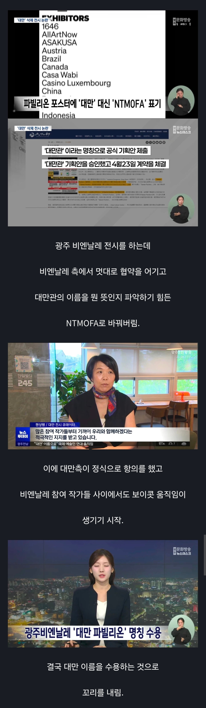

역시 광주란 이름은 경기도 광주가 가져가야..

역시 광주란 이름은 경기도 광주가 가져가야..
여기도 한 마리 있군
역시 그짝이네
대만 특유의 피해의식 때문에 일어난 사건이다. 최근 들어 대만이 한국에 외교적으로 시비거는 분위기와 무관하지 않다.
국가 단위로 신청하면 국가관, 기관이 신청하면 기관관으로 분류되는데 국립대만미술관이 기관관으로 신청했다.
애초에 대만 측에서 신청을 그렇게 한거고 이전 비엔날레 때는 별 말이 없었다.
광주비엔날레는 기관이 아닌 국가가 신청하는 것으로 변경 신청해달라고 안내했고, 결국 대만이 정정 신청서를 내서 '대만 파빌리온'으로 변경된거다.
광주비엔날레가 잘못한게 아니라, 대만이 혼자 오버한 사건이다.
음흉하네
버러지들 바글바글하네
팡주 궁딩 팡팡
개드립도 걍 병신 되버렸네 ㅋㅋㅋㅋㅋㅋㅋㅋㅋㅋㅋㅋㅋㅋㅋ
ㅋㅋㅋㅋㅋㅋㅋ 색깔 확실하네
광주가 잘못했는데 수호단 총출동해서ㅜ여론 물타기하는거봐라 ㅋㅋㅌ
어떤걸 잘못했는지 설명을 해줘야 이해하지
이건 광주비엔날레 쪽에서 욕먹을 수밖에 없음
광주비엔날레 측 의견 :
국립대만미술관(NTMoFA)이 1월 12일 기관 자격으로 전시 협약을 체결했다.
따라서 처음부터 NTMoFA = 국가관이 아니라 기관관 이다.
대만 측 의견 :
ㄴㄴ우리는 처음부터 Taiwan Pavilion이라고 신청했다. 그리고 계약일자도 1월이 아니라 4월 23일이다.
위 두가지 의견은 계약서가 공개되지 않는이상 확인이 어려움. 근데 광주측이 욕먹어야하는건 이제 부터임.
6월 9일까지는 계속 양측업무 메일상에선 Taiwan Pavilion이라고 언급하다가 6월 10일부터 갑자기 NTMoFA Pavilion이라는 명칭을 광주측에서 제안하기 시작함.
이에 대만측이 항의하자 광주측에서 "느그는 국가관이 아니라 기관관 아님?"하는 의견을 내놨다는거.
이후 7~8월 홍보포스터에도 NTMoFA라고 언급되니까 8월 10일 대만측 공식항의가 들어갔고 회신 달라는 요청을 광주측에서 씹었다는게 대만의 주장임.
그리고 15일부터 참가작가들이 주최측에 정치적 검열이라는 항의를 넣고 17일에는 대만정부까지 공식항의를 넣고 여론 조져지기 시작함.
광주측은 그때까지도 NTMoFA는 기관관이라는 주장을 고수하다가 대만 문화부가 25일에 NTMoFA는 대만을 대표하는 국가관이라는 공식문서를 넣으니까 그제서야 Taiwan Pavilion이라는 명칭을 승인함.
이건 광주측에서 욕안먹으려면 니들이 원하는게 뭐냐고 적극적으로 대처했던가 대만 주장이 틀렸으면 계약서 공개하던가 했어야함.
날짜까지 틀려가며 나몰라라 하니까 그동안 쌓아온 이미지 업보까지 같이 터진거지.
관련기사
https://www.yna.co.kr/view/AKR20260818110500009?utm_source=chatgpt.com
https://www.fnnews.com/news/202608261750162321?utm_source=chatgpt.com
저 위에 77게이 설명이랑 반대되는 입장인데 추가 설명좀

음습하넼ㅋㅋㅋ
광주 노래도 시발 이상한거 애들한테 시키더만 동네가 왜저러냐 씨발 ㅋㅋ
중국돈 노리는 광주가 광주한거지
UN에서 나라 존재를 인정을 못받는데 무슨 시발 미국에서도 차이니즈타이페이인데 저새끼들 우리한테만 저지랄하네 진짜 개병신같은 섬짜장새끼들이 진짜
댓글에 비응신 일베충새끼들 만선이네
사족 실화냐??
화나?
ㅆㅂ 여기 일베냐? 뭔 댓글들이 광주 전라도 지역혐오하는 베츙이 ㅅㅋ들 천지냐?
생각해보니 2중대는 맞네 ㅋㅋㅋㅋㅋㅋㅋ
역시…
광주답노. 중국몽이 그리 좋은가 ㅋㅋㅋ
일베새끼들 다튀어 나오네 개씨발 해충새끼들